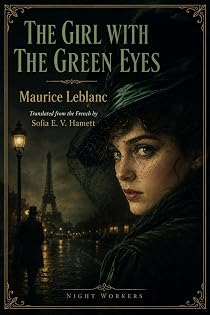

La Demoiselle aux yeux verts
A novel of Arsène Lupin
by Maurice Leblanc · translated by Sofia E. V. Hamettpar Maurice Leblanc · traduit par Sofia E. V. Hamett
The bookLe livre
Raoul de Limézy strolls the boulevards on a bright April day with the air of a man who has only to look around to enjoy himself — medium height, slim and powerful at once, sleeves swelling at the biceps. Then he sees a woman with green eyes, and then he sees another man seeing her. One of Leblanc's most headlong plots, and one of his best openings.
Raoul de Limézy flâne sur les boulevards par une claire journée d'avril, de l'air d'un homme à qui il suffit de regarder autour de lui pour jouir de la vie — taille moyenne, mince et puissant à la fois, les manches gonflées aux biceps. Puis il voit une femme aux yeux verts, et il voit ensuite un autre homme la voir. L'une des intrigues les plus emportées de Leblanc, et l'une de ses meilleures ouvertures.
From the opening pagesLes premières pages
Raoul de Limézy was strolling the boulevards, light on his feet, with the air of a happy man who has only to look about him to enjoy life, its charming spectacles, and the easy gaiety Paris puts on for certain bright days in April. He was of medium height, and his build was slim and powerful at once. The sleeves of his jacket swelled at the biceps, and his chest filled out above a waist that was narrow and supple. The cut of his clothes, and their colour, marked him as a man who took the choice of a cloth seriously.
As he passed the Gymnase theatre, he got the impression that a gentleman walking beside him was following a lady — an impression he was able to verify almost at once.
Nothing struck Raoul as funnier or more entertaining than a man following a woman. So he followed the man who was following the lady, and the three of them, one behind the other at decent intervals, made their way along the noisy boulevards.
It took all the Baron de Limézy's experience to see that the man was following the lady, because he was taking a gentleman's care that she should not suspect it. Raoul was equally careful. Mingling with the strollers, he quickened his pace to get a proper look at both of them.
From behind, the man was distinguished by a flawless parting through black, pomaded hair, and by an equally flawless suit that made the most of broad shoulders and a tall frame. From the front he offered a respectable face, a well-kept beard, and a fresh pink complexion. Thirty, perhaps. Certainty in the walk. Self-importance in the gestures. Vulgarity in the general effect. Rings on the fingers. A gold tip on the cigarette he was smoking.
Raoul hurried. The lady was tall and purposeful and carried herself well, planting a pair of large English feet squarely on the pavement — feet redeemed by graceful legs and delicate ankles. Her face was very beautiful, lit by remarkable blue eyes beneath a heavy mass of fair hair. Passers-by stopped and turned to look. She seemed indifferent to this spontaneous tribute from the crowd.
"Good Lord," thought Raoul, "what an aristocrat. She deserves better than the pomaded specimen on her heels. What does he want? Jealous husband? Suitor who's been shown the door? Or a dandy out hunting an adventure? Yes, that will be it. The man has exactly the face of someone who does well with women and believes himself irresistible."
She crossed the Place de l'Opéra without troubling herself about the traffic clogging it. A dray tried to cut across her path; calmly she took the horse by the reins and brought it to a stop. The driver leapt down from his seat in a fury and swore at her from too close range. She landed a short punch on his nose that brought the blood out. A policeman came over and asked for an explanation; she turned her back on him and walked quietly away.
In the Rue Auber two boys were fighting. She took them by the collar and sent them rolling ten paces off. Then she threw them two gold coins.
On the Boulevard Haussmann she went into a pâtisserie, and from a distance Raoul saw her sit down at a table. The man following her did not go in, so Raoul did, choosing a place where she was unlikely to notice him.
She ordered tea and four slices of toast, which she demolished with a magnificent set of teeth.
The people at the neighbouring tables watched her. She remained unruffled and had four more brought.
But another young woman, at a table further off, was drawing attention as well. Fair like the Englishwoman, her hair in soft waves, less expensively dressed but with the surer taste of a Parisienne, she sat surrounded by three poorly dressed children, dealing out cakes and glasses of grenadine. She had picked them up at the door and was treating them for the plain joy of watching their eyes light up and their cheeks get smeared with cream. They didn't dare speak; they simply stuffed themselves. But she, more of a child than any of them, was enjoying herself enormously, and did the talking for all four of them.
"Now, what do we say to the young lady? Louder. I didn't hear that. No, I'm not a madam. You're supposed to say: 'Thank you, miss.'"
Raoul de Limézy was won over on the spot by two things: the happy, unforced gaiety of her face, and the deep pull of two large green eyes, jade-coloured and shot through with gold, which you could not look away from once you had looked at them at all.
Eyes like that are usually strange, melancholy, or thoughtful, and perhaps that was their habitual expression. But at this moment they gave off the same blaze of intense life as the rest of the face — as the mischievous mouth, the quivering nostrils, the cheeks with their smiling dimples.
"Extremes of joy or extremes of pain — there's no middle ground for creatures like that," Raoul said to himself, and felt a sudden desire to have a hand in the joys, or to fight off the pain.
He turned back to the Englishwoman. She really was beautiful, with a powerful beauty made of balance, proportion and calm. But the girl with the green eyes, as he had already named her, held him more. One of them you admired; the other you wanted to know, and to get at the secret of her life.
Still, he hesitated when she had settled her bill and left with the three children. Follow her, or stay? Which would win? The green eyes? The blue?
He got up in a hurry, threw money on the counter and went out. The green eyes had won.
What he saw stopped him: the girl with the green eyes was standing on the pavement talking to the dandy who, half an hour earlier, had been trailing the Englishwoman like a shy or jealous lover. The conversation was animated, feverish on both sides, and looked a great deal more like an argument. It was clear that the girl was trying to get past and that the dandy was blocking her — so clear that Raoul was on the point of ignoring every rule of manners and stepping in.
He had no time. A taxi pulled up outside the pâtisserie. A man got out, saw the scene on the pavement, ran over, raised his walking stick and, with a full swing, sent the pomaded dandy's hat flying.
The dandy fell back, astounded, then lunged, with no thought for the people gathering around them.
"You're mad! You're out of your mind!" he shouted.
The newcomer, who was shorter and older, put himself on guard, the stick raised.
"I forbade you to speak to that girl. I am her father, and I tell you that you're nothing but a scoundrel — yes, a scoundrel!"
There was something like a tremor of hatred in both men. Stung by the insult, the dandy gathered himself, ready to spring at the newcomer, whom the girl had by the arm and was trying to steer towards the taxi. He managed to separate them and get hold of the older man's stick — and then, all at once, he found himself face to face with a head that had risen up between him and his opponent. A head he had never seen before, an odd one, its right eye blinking nervously, its mouth twisted into a grimace of irony around a cigarette.
The excerpt ends here — about 1,281 words of the published edition.L'extrait s'arrête ici — environ 1,281 mots de l’édition parue.
KindlePaperbackBrochéContextContexte
Everyone in English knows The Hollow Needle and 813. Almost nobody has read Barnett & Co., The Mélamare House, La Barre-y-va or The Girl with the Green Eyes — the later Lupin books that never entered the English canon, or entered it once and fell out. There is a symmetry the house enjoys here: Leblanc built Lupin out of newspaper reports on Alexandre Marius Jacob, whose memoirs gave Night Workers its name.
Tout le monde connaît en anglais L'Aiguille creuse et 813. Presque personne n'a lu L'Agence Barnett et Cie, La Demeure mystérieuse, La Barre-y-va ou La Demoiselle aux yeux verts — les Lupin tardifs qui ne sont jamais entrés dans le canon anglais, ou qui en sont sortis. Il y a là une symétrie qui plaît à la maison : Leblanc a bâti Lupin à partir des comptes rendus de presse sur Alexandre Marius Jacob, dont les mémoires ont donné son nom à Night Workers.
The whole programmeTout le programme